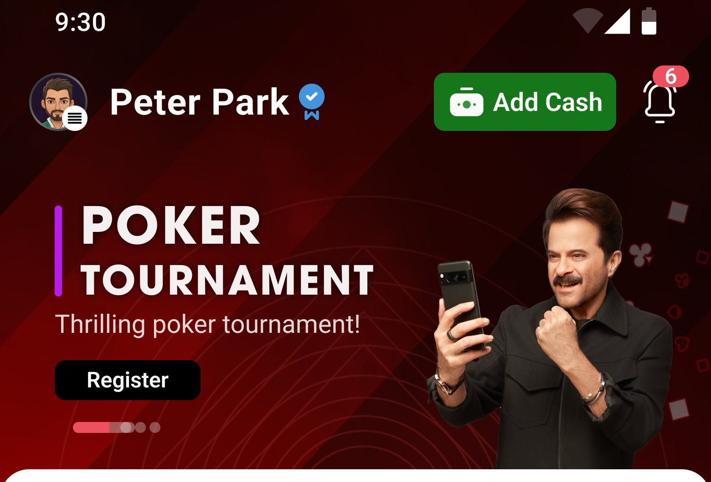
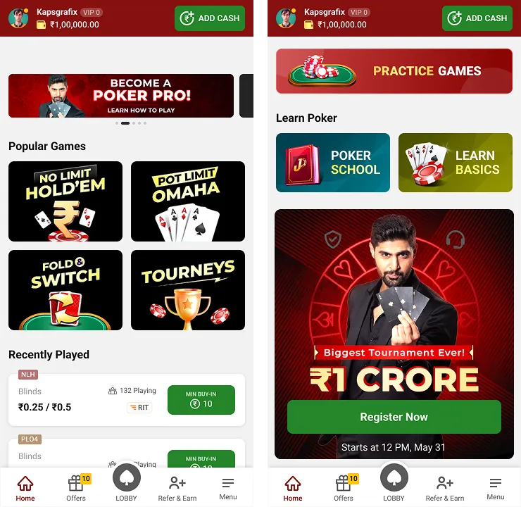
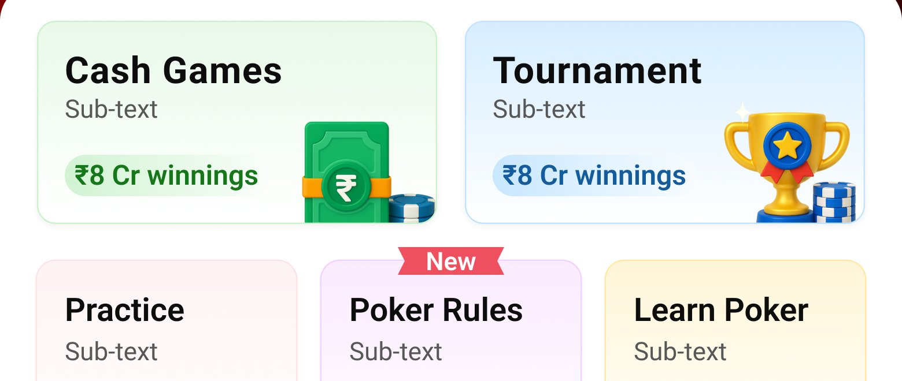
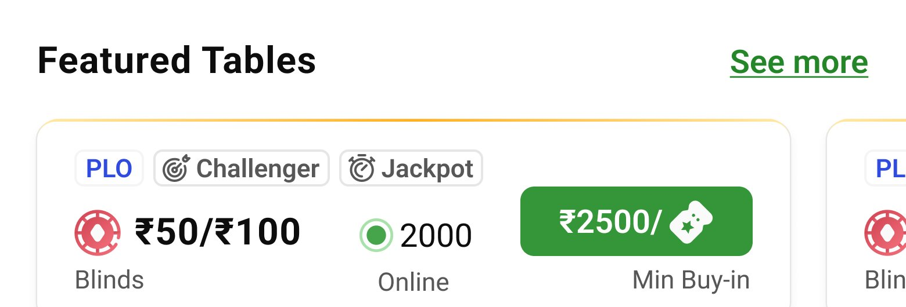

Making a complex poker ecosystem easier to navigate for beginners, regulars, and experienced players. The poker lobby is the starting point of every player's journey — it needs to help beginners understand where to start, regulars find their usual games quickly, and experienced players scan the information they care about, without making the experience feel overwhelming.

The poker lobby had to serve players with very different goals: beginners needed guidance and confidence before entering their first game, regular players wanted to get to their usual tables quickly, and experienced players cared about specific information such as blinds, buy-ins, prize pools, and player counts.
At the same time, tournaments and promotional content needed visibility without competing with the core task: finding the right game and joining it. The redesign focused on making the lobby easier to scan, easier to understand, and easier to act on.
The existing lobby presented multiple game types, promotional banners, and supporting information in a relatively flat experience. This created three fundamental problems.
New players had difficulty understanding which game they should start with.
Important details such as buy-ins, blinds, and player counts weren't immediately visible.
Legal, security, and supporting information was available but wasn't surfaced at the moments when new players needed reassurance.
The challenge became: how might we help every type of player find their next action faster — without removing the information they need to make that decision?
We conducted user interviews and contextual inquiry with 12 poker players, covering beginners, regular players, and high-stakes players. The conversations revealed different behaviours across each group.


Looking at a three-month usage period revealed several friction points in the existing journey.
Drop-off before joining a game — users were leaving before reaching their first game session.
Average time to first game — a long path from entering the lobby to actually playing.
Week-1 repeat sessions — a relatively low repeat-session rate indicated an opportunity to improve the early experience.
Tournament registration — only a portion of active users were registering despite the promotional focus.
Help / Practice usage — learning resources were available but weren't being discovered frequently.
The opportunity was clear: reduce the work required to find the right game while making the right information visible at the right moment.
Rather than trying to redesign every part of the lobby at once, we focused on the moments that had the biggest impact on the player's journey.
The first major change was restructuring the lobby around player intent. Instead of presenting different games as one large collection, we introduced clearer categories: Cash · Tournaments · Practice · Sit & Go · Quick Play.
This gave players a simple starting point based on what they wanted to do. The navigation should help them choose an experience rather than teach them how the product is organised.
Previously, important information was buried or required additional interaction. We brought the most relevant information directly into the game cards: buy-in, blinds, player count, game type, and prize information where relevant.
This changed the interaction from Open → Inspect → Go back → Compare to Scan → Compare → Join. The goal wasn't to show more information — it was to show the right information at the right level of hierarchy.

Featured tables surface blinds, buy-ins, and player counts directly on the card — no extra taps required.
The research showed that beginners needed more context than experienced players. Instead of making learning resources something users had to actively search for, we introduced progressive disclosure through Poker School, practice games, FAQs, and contextual guidance.
Give experienced players speed. Give beginners context. Both should be able to use the same lobby without one group feeling penalised by the other's needs.
For someone unfamiliar with the platform, choosing a game isn't purely a functional decision. They also need to feel confident about whether the platform is legitimate, how the game works, prize information, security, and legal considerations.
We therefore brought trust-related information closer to the primary experience instead of keeping it buried in secondary navigation. Trust became part of the journey — not a separate destination.
The existing experience relied heavily on promotional banners. The redesign shifted the role of promotional content from attention-grabbing decoration to useful entry points: tournament discovery, leaderboards, referral rewards, and relevant promotional opportunities.
The principle: if a promotion doesn't help a player understand what they can do next, it shouldn't compete with the primary navigation.
Instead of organising the lobby around internal product structure, we organised it around what players were trying to accomplish — different players arrive with different levels of knowledge and different goals.
Buy-ins, blinds, player counts, and other relevant information became visible before entering a table — players should be able to compare games without repeatedly opening and closing them.
Beginners get access to learning and guidance without forcing the same information on experienced players — different levels of expertise require different amounts of context.
Security, legal information, and prize transparency were brought closer to the primary journey — trust is part of the decision to play, particularly for new users.
Tournaments and rewards became clearer entry points rather than competing banners — promotional content works better when it supports an action instead of interrupting one.
Flat game list with limited categorisation.
Clear categories organised around player intent.
Change: players can narrow down their options before evaluating individual tables.
Important table information was buried.
Buy-ins, blinds, player counts, and relevant details appear directly in the experience.
Change: players can compare options without unnecessary navigation.
Help, practice, and trust information were secondary.
Relevant guidance and reassurance are surfaced progressively.
Change: beginners get more context while experienced players can move through the lobby quickly.
The redesign wasn't about creating one perfect journey. It was about creating different paths through the same system.
Discover → Learn → Practice → Play
The experience provides enough context to build confidence before playing.
Discover → Compare → Join
The interface prioritises speed and relevant game information.
Scan → Evaluate → Join
Important information is visible upfront so experienced players can make decisions quickly.
Discover → Tournament → Compete → Return
Tournament discovery and rewards create a clearer path into competitive play.
The redesigned lobby created a clearer relationship between player intent, information, decision, and action. Instead of presenting every option with equal weight, the experience prioritises what players need at each stage.
The result is a lobby that can support very different types of players without forcing everyone through the same journey.
The hardest part wasn't organising the lobby. It was deciding what not to show everyone. A beginner doesn't need the same information as a regular player. A regular player doesn't need the same guidance as someone playing high-stakes games. And experienced players often value density and speed over additional explanation.
For a product with a large number of game types, promotions, rules, and supporting information, the role of design isn't simply to organise everything. It's to establish hierarchy, intent, and confidence.